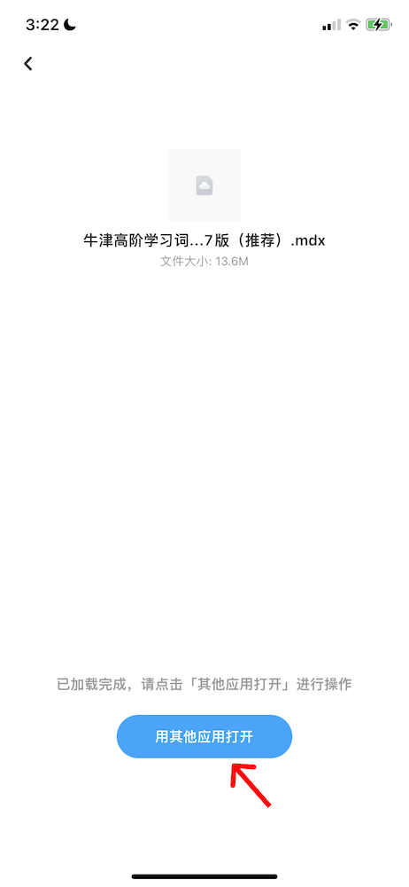
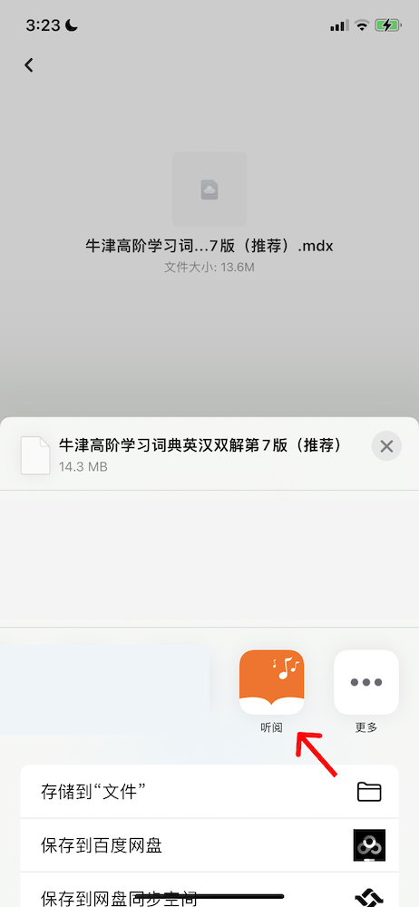
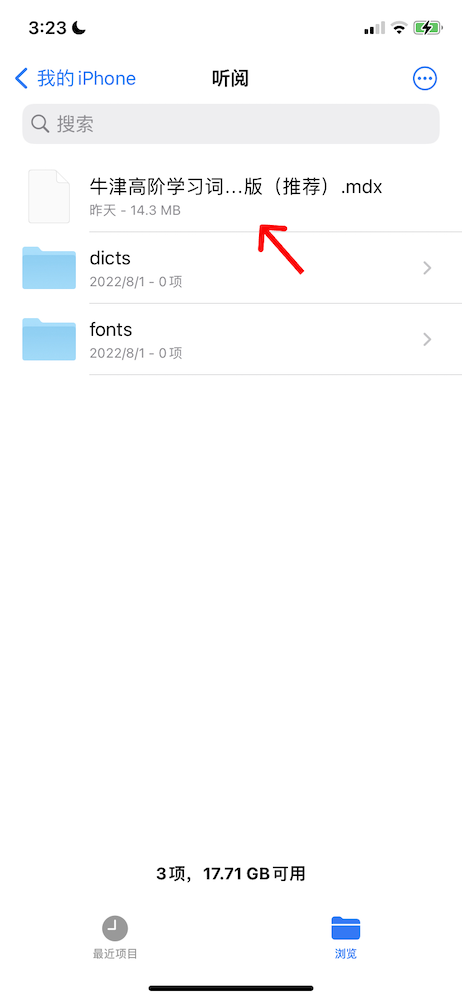
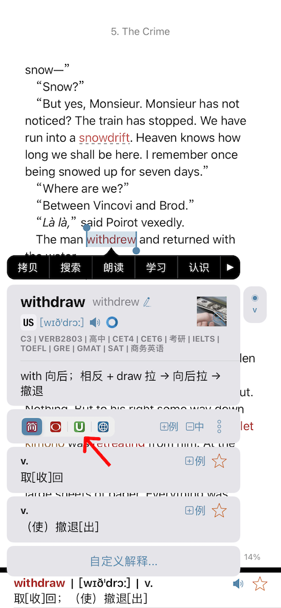

对于Mac版听阅，只需将词典文件拷贝到目录/Users/
/Library/Containers/com.xuehu.words/Data/Documents/dicts，然后重启应用即可。
1. 导入词典文件
MDICT词典一般包含三类文件：mdx/mdd/css文件。您可通过百度网盘、AirDrop等方式将这些文件导入到听阅中。
通过百度网盘，您可按照以下步骤导入词典。
在iPhone/iPad中打开“百度网盘”应用。
找到您想导入的词典文件，点击并下载到设备中。
等下载完成后，轻点页面上的“用其他应用打开”按钮。

在应用列表中找到听阅并点击，词典将自动拷贝到听阅目录中。

重启「听阅」。
如何检查文件是否导入成功您在手机上打开苹果应用「文件」，选择“我的iPhone” -> “听阅”，然后检查词典文件是否在听阅目录中。

导入词典不生效词典文件导入听阅后，需重启听阅后词典文件才能生效。
2. 打开词典
导入词典后，在词典详情页，点按图标。若菜单栏无此图标，请点击最右边的更多图标，然后在词典设置页面选中“用户词典”。

在弹出页面中，我们将显示所有导入的词典。